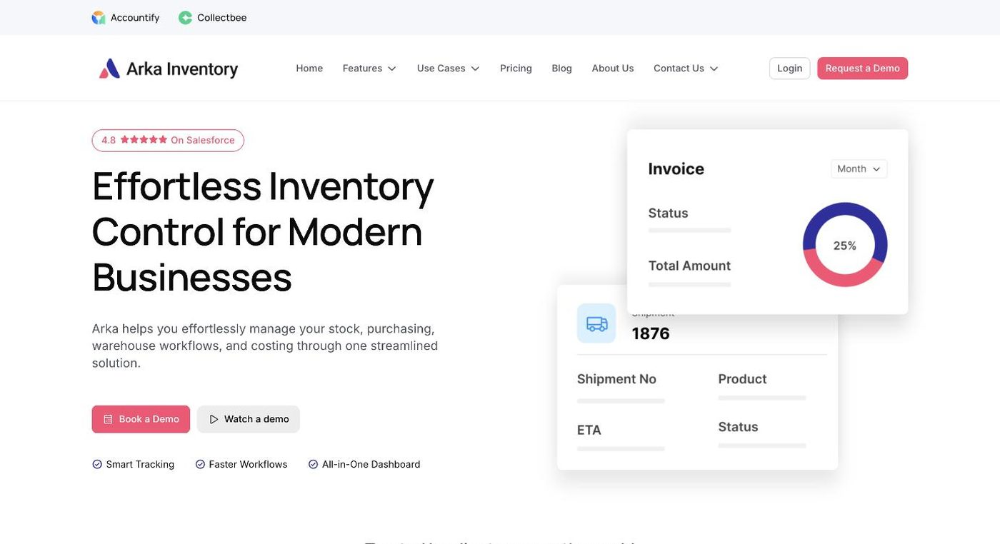

Arka Inventory
Native Salesforce inventory, purchasing and warehouse management

- Category
- Inventory Management
- Pricing
- Inventory $39/user/mo; Inventory + MRP $49/user/mo; Inventory + MRP + Warehouse Management $59/user/mo. Free trial available on all tiers.
- Best for
- Arka Inventory is best suited to growing businesses that already run their operations on Salesforce and need real inventory, purchasing, manufacturing or warehouse control without bolting on a separate ERP system.
- Official site
- www.arkainventory.com
- Last updated
- August 2026
Arka Inventory is an inventory and warehouse management application built natively on the Salesforce platform, aimed at businesses that already run their sales, service or operations through Salesforce and want inventory control in the same system rather than a separate ERP integration. It covers the full stock lifecycle - visibility, commitment, alerts, purchasing, manufacturing and warehousing - through a single, modular product.
The product is sold in three tiers that layer on capability: a base Inventory tier for stock visibility and operations, an Inventory + MRP tier that adds purchase planning and requisitions for manufacturing-style businesses, and a full Inventory + MRP + Warehouse Management (WHM) tier that adds landed cost visibility and multi-location warehouse operations. It's listed on Salesforce AppExchange, where it holds a 4.9/5 rating, with customer testimonials describing week-long implementation timelines and strong customization support.
Arka Inventory is best suited to growing businesses that already run their operations on Salesforce and need real inventory, purchasing, manufacturing or warehouse control without bolting on a separate ERP system. It's a weaker fit for businesses not on Salesforce, or very small operations that don't need multi-location or manufacturing-grade inventory features and would be over-served by the MRP/WHM tiers.
Key features
Inventory Visibility
Tracks inventory levels and movement throughout the sales cycle, so stock data stays current inside Salesforce rather than a separate system.
Commit Inventory
Lets teams reserve stock against specific orders to prevent overselling of limited inventory.
Inventory Alerts
Sends automated notifications when stock hits thresholds or other inventory issues need attention.
Bill of Materials
Defines products that are assembled from multiple component materials, supporting manufacturing and kitting use cases.
Lot & Serial Tracking
Tracks inventory by batch/lot, expiry date and individual serial number for traceability and compliance.
Forecasting & Purchase Automation
Uses demand forecasting to help automate and time purchase orders, reducing manual reordering work.
Warehouse Management
Supports multi-location warehouse operations, part of the top Inventory + MRP + WHM tier.
Landed Cost Tracking
Gives full cost visibility on inventory, including freight and other landed costs, alongside custom reports and dashboards.
Pricing breakdown
Inventory
- Inventory visibility and alerts
- Commit inventory to orders
- Barcoding
- Accounting integration
Inventory + MRP
- Everything in Inventory
- Purchase planning
- Requisitions and purchase orders
- Bill of Materials and manufacturing support
Inventory + MRP + WHM
- Everything in Inventory + MRP
- Landed cost tracking
- Multi-location warehouse management
- Custom reports and dashboards
Pros and cons
Pros
- Living natively inside Salesforce means inventory data sits alongside sales, service and customer records instead of requiring a separate ERP integration or nightly sync
- A 4.9/5 AppExchange rating and testimonials describing a roughly one-week implementation suggest a comparatively low-friction rollout for a Salesforce-native inventory system
- Modular tiers ($39 to $59/user/month) let businesses start with basic inventory visibility and add manufacturing (MRP) or warehouse management only when they need it
- Covers lot/serial tracking, Bill of Materials and landed cost together, which typically requires stitching multiple point tools outside the Salesforce ecosystem
Cons
- It's a Salesforce-only solution - businesses running a different CRM/ERP core would need to switch platforms or integrate separately to use it
- The AppExchange review base is still small (10 reviews), so while the 4.9/5 rating is strong, it's based on a limited sample compared to larger inventory platforms
- Reviewers flag that Bill of Material setup takes real training time and isn't fully intuitive out of the box
- Per-user monthly pricing across a larger warehouse or operations team can add up compared to flat-fee inventory tools
What reviewers say
Arka Inventory holds a 4.9/5 rating from 10 reviews on Salesforce AppExchange. Reviewers highlight real-time inventory tracking, seamless integration with tools like E-Way Bill and E-invoicing, responsive customer support, and an interface usable by both technical and non-technical staff. Testimonials from Andrew Bauer (Operations Manager) and the HCPL Hexmoto Manufacturing operations team specifically praise fast, low-friction adoption and strong customization.
Frequently praised
- Real-time inventory tracking that helps optimize stock levels and reduce wastage
- Seamless integration with E-Way Bill and E-invoicing
- Responsive customer support frequently called out by reviewers
- Adopted effectively within about a week per customer testimonials
Frequently criticized
- Bill of Material training can be time-consuming and not very intuitive
- Tedious tab-switching during invoicing workflows
- Requests for improved PDF formatting and more detailed reporting
- Review volume (10 on AppExchange) is still small relative to larger inventory platforms
Alternatives to Arka Inventory
Frequently asked questions
Does Arka Inventory require Salesforce?
Yes, Arka Inventory is built natively on the Salesforce platform and is distributed through Salesforce AppExchange.
How much does Arka Inventory cost?
Plans run $39/user/month (Inventory), $49/user/month (Inventory + MRP), and $59/user/month (Inventory + MRP + Warehouse Management), with a free trial on all tiers.
What is Arka Inventory's AppExchange rating?
It holds a 4.9/5 rating from 10 reviews on Salesforce AppExchange at the time of this listing.
Does Arka Inventory support manufacturing businesses?
Yes - the Inventory + MRP tier and above add Bill of Materials, purchase planning and manufacturing/kitting support.
Can Arka Inventory manage multiple warehouse locations?
Yes, multi-location warehouse management is included in the top Inventory + MRP + WHM tier.
Ready to try Arka Inventory?
Head to the official site to explore pricing and start a free trial where available.
Visit Arka Inventory →